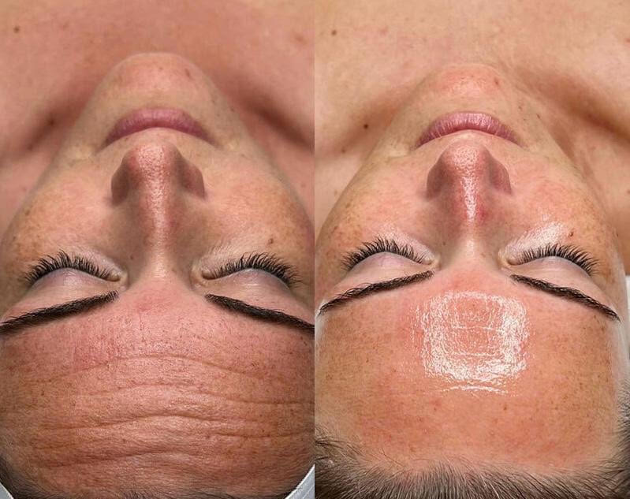
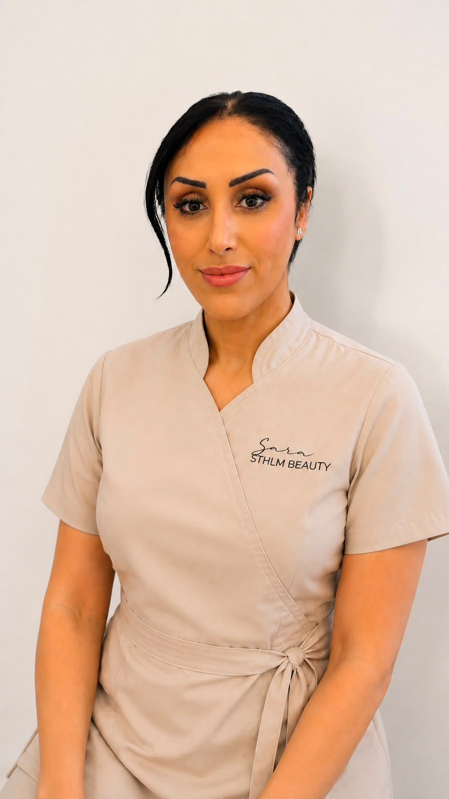

Mer lyster
Exfolieringen avlägsnar döda hudceller och kan ge huden ett klarare, fräschare intryck.
Djuprengöring, återfuktning och ny lyster i en och samma ansiktsbehandling. Du får dessutom bryn- och fransfärgning samt ansning av brynen på köpet.
Erbjudandet gäller till och med 31 januari 2027
HydraFacial kombinerar exfoliering, porrengöring och återfuktande serum. Jag börjar med att titta på din hud och anpassar behandlingen efter hur den känns och vad du vill få ut av besöket.
Exfolieringen avlägsnar döda hudceller och kan ge huden ett klarare, fräschare intryck.
Porrengöringen hjälper till att avlägsna talg och orenheter som samlats i porerna.
Behandlingen kan göra att hudytan känns slätare och mjukare.
Serumet ger fukt och kan göra att huden känns mindre stram.

Före EfterHuden kan kännas mjukare och se klarare ut redan efter första besöket. Hur tydlig skillnaden blir beror på hudens utgångsläge.
Hudytan exfolieras för att avlägsna döda hudceller.
HydraFacial använder vakuum för att hjälpa till att dra ut talg och orenheter ur porerna.
Ett återfuktande serum appliceras för att ge huden en mjuk och fräsch känsla.
Jag rengör huden i två steg och tittar på vad just din hud behöver.
Jag förbereder huden med ånga och anpassar porrengöringen efter hudens behov.
Huden exfolieras, rengörs och återfuktas med HydraFacial.
Du får massage och jag avslutar med produkter anpassade efter din hud.
I kampanjen ingår även färgning av bryn och fransar samt ansning av brynen.
Unna dig en ansiktsbehandling med djuprengöring, fukt och massage. Under julkampanjen får du också bryn- och fransfärgning samt ansning av brynen inkluderat i priset.
Vill du ge bort en HydraFacial i julklapp? Hör av dig så hjälper jag dig med presentkort.
Berätta gärna om din hud är extra känslig eller om du nyligen gjort en annan ansiktsbehandling. Nämn också om du tidigare reagerat på bryn- eller fransfärg.
Du får råd om hur du tar hand om huden hemma utifrån hur den känns efter besöket.

Jag är auktoriserad hudterapeut, utbildad på Axelsons och grundare av Sara STHLM Beauty. Jag har internationellt diplom inom CIDESCO Beauty & SPA, är medlem i SHR och har gesällbrev som hudterapeut. Hos mig börjar varje behandling med att jag tittar på din hud och lyssnar på vad du vill få ut av besöket.
Kunskap – Kvalitet – Trygghet
Läs vad kunder berättar om sina besök hos Sara STHLM Beauty på Bokadirekt.
Hämtar omdömen…
För 666 kr får du en komplett HydraFacial-ansiktsbehandling med dubbelrengöring, hudanalys, ånga, porrengöring, massage och avslutande hudvård. Bryn- och fransfärgning samt ansning av brynen ingår också.
Det kan passa dig som upplever att huden känns glåmig, sträv, torr eller tilltäppt. Jag gör en hudanalys på plats och anpassar behandlingen efter din hud.
Huden kan kännas mjukare och se mer återfuktad ut direkt efter besöket. Resultatet varierar från person till person.
Ja, hör av dig om du vill ge bort en HydraFacial så hjälper jag dig med presentkort.
Sara STHLM Beauty finns inne i Salong Diamant i Storstugan på Åkerbyvägen 82 i Täby.
En komplett ansiktsbehandling med bryn- och fransfärgning samt ansning av brynen inkluderat. Erbjudandet gäller till och med 31 januari 2027.